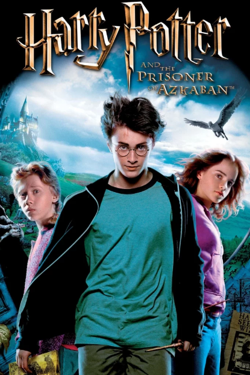
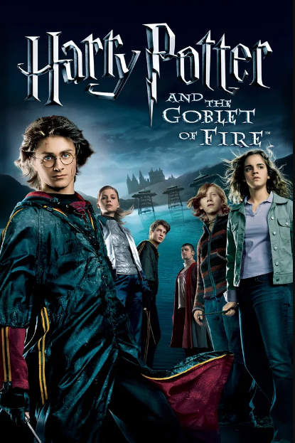

This movie represent as prolog of the story. The cast introduction, harry potter found out as wizard and meet his partner Hermonie Granger and Ron Weasley.
Each movie have mission that correlate with the enemy of the movie at this movie the mission is about Nicholas flamel's sorcerer stoner.
Harry Potter and the Chamber of Secrets
This movie is the beginning to understand about hogwarts history. The mission of this second movie is to find out serial killer change person become stone and missing of ginny weasly.
Harry Potter and the Prisoner of Azkaban

Let's learn about harry potter family sirius black. This movie is the first guidence to understand about harry potter thunder mark on his forehead. The mission is searching for sirius black and marauder's map.
Harry Potter and the Goblet of Fire

Introducing the rebrith of lord voldermort. In this season we must feel sad and lost of hope and lot of pressure. The mission is win Triwiard Tournament and friends.
Harry Potter and the Order of Phoenix
We must become union despite to uncertainty people that lord voldermord comeback. Harry try to strenght and prepare for battle with lord voldermord while speed up with time. The mission is to defend against the dark arts aka lord voldermodrd and ther fellow.
Harry Potter and the Half-Blood Prince
Finding about mysterious Half-Blood Prince as the key to defeating voldermort. Watch this and you realize something heheh.
Harry Potter and the Deathly Hallows - Part 1
This movie feel so nerve-racking. A lot of problem happen and feel like harry potter in state of lose to lord voldermort.
Harry Potter and the Deathly Hallows - Part 2
At this movie we can see harry potter is not just a fantasy movie its beyond that. Watch this to see the final destiny of harry potter and friends.